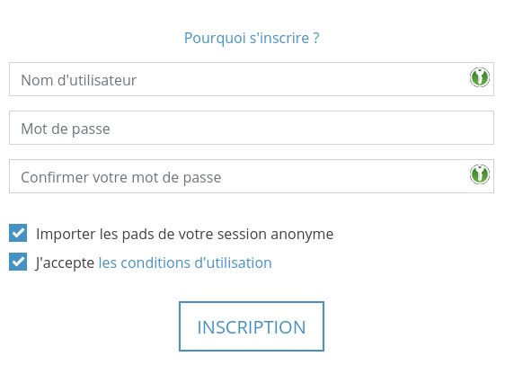
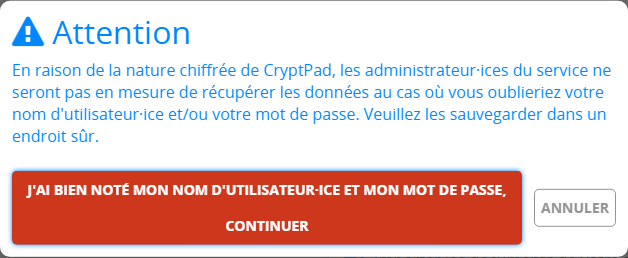

Compte utilisateur·ice#
CryptPad chiffre vos données, elles ne sont lisibles que par vous et vos collaborateurs. Pour cette raison les administrateur·ices du service ne peuvent pas voir ou changer votre mot de passe. Il est donc important de le sauvegarder dans un endroit sécurisé, hors de votre compte CryptPad.
Note
CryptPad utilise la combinaison de votre nom d'utilisateur·ice et de votre mot de passe pour vous identifier. Les noms d'utilisateur·ices ne sont pas uniques sur CryptPad, il est possible de créer plusieurs comptes avec le même nom d'utilisateur·ice et des mots de passe différents.
Types de comptes#
Il existe trois types d'utilisateurs sur CryptPad :
Visiteur·ice#
Les utilisateur·ices non enregistré·es sont identifié·es par un avatar émoji d'un animal ou mascotte (en haut à droite).
Aucune information personnelle n'est demandée pour utiliser CryptPad de manière non-enregistrée. Les fonctionnalités sont cependant réduites :
Accès à toutes les applications.
Collaboration et partage de documents.
Durée de stockage limitée à 3 mois d'inactivité (pour chaque document).
Stockage de fichiers indisponible pour les images/vidéos/PDF/etc…
Limiter l'accès à calendars (calendriers à lien partagés uniquement).
Utilisateur·ice enregistré·e#
Les utilisateur·ices enregistré·es ont comme avatar (en haut à droite) leur photo de profil ou les deux premières lettres de leur nom affiché.
Enregistrer un compte ne nécessite pas de données personnelles, seulement un nom d'utilisateur·ice et un mot de passe sont demandés. Les fonctionnalités additionnelles sont les suivantes :
Espace de stockage personnel et permanent.
Stockage de fichiers images/vidéos/PDF/etc…
Gestion de documents plus complète en tant que propriétaire : ajout d'un mot de passe, d'une date d'expiration et liste d'accès.
Organisation de vos documents en dossiers, dossiers partagés, en leur assignant des mots-clés ou en sauvegardant des modèles.
Création d'équipes.
Personnalisation de la page de profil et ajout de contacts pour le partage de documents et chat. Notifications pour les interactions entre contacts.
Création et gestion de calendars.
Gestion du compte#
Inscription#
Pour enregistrer un nouveau compte, rendez-vous sur la page d'inscription : Inscription en haut à droite sur la page d'accueil.

Remplir les informations suivantes :
Nom d'utilisateur·ice : Le nom utilisé pour vous connecter sur CryptPad, différent du Nom affiché visible par les autres utilisateur·ices. Le Nom d'utilisateur·ice ne peut pas être changé une fois le compte créé.
Note
Contrairement à de nombreux services en ligne, CryptPad ne nécessite pas d'adresse électronique pour s'inscrire. Il est possible d'utiliser une adresse électronique comme nom d'utilisateur·ice, mais elle est alors utilisée comme n'importe quelle autre chaîne de caractères. Comme expliqué ci-dessous, ce nom d'utilisateur·ice n'est pas visible par les administrateur·ices et n'est jamais utilisé pour communiquer au sujet de votre compte (en particulier, les e-mails de récupération de mot de passe n'existent pas sur CryptPad).
Mot de passe : Il est conseillé d'utiliser un mot de passe complexe. Le mot de passe peut être changé dans les préférences utilisateur·ice.

Danger
Important : Les administrateur·ices du service CryptPad ne peuvent pas voir ou retrouver votre mot de passe s'il est perdu ou oublié.
Conditions d'utilisation : Lire et accepter les conditions d'utilisation du service.
Optionnel :
Importer les documents de votre session anonyme : Si vous avez créé des documents lors d'une session anonyme, vous pouvez les importer dans votre compte.
Connexion#
Pour vous connecter sur votre compte, rendez-vous sur la page de Connexion (en haut à droite sur la page d’accueil) et remplissez le nom d'utilisateur·ice et le mot de passe choisis à l'inscription.
Optionnel :
Importer les documents de votre session anonyme : Si vous avez créé des documents lors d'une session anonyme, vous pouvez les importer dans votre compte.
Notifications#
Utilisateur·ices enregistré·es
CryptPad vous notifie lorsque vos contacts interagissent avec vous. Les notifications sont affichées par la cloche à côté de l'avatar (en haut à droite). Si vous avez des notifications non lues, la cloche est pleine et un compte est affiché.
Menu déroulant en cliquant sur la cloche :
Consulter les notifications non lues.
Supprimer une notification avec .
Ouvrir le panneau de notifications : Consulter toutes les notifications et l'historique des notifications reçues.
Sur la page du panneau de notifications :
Sélectionner le type de notifications à consulter :
Toutes.
Demandes de contact.
Partagés avec moi.
Historique.
: Supprimer les notifications.
Préférences#
Les réglages du compte sont accessibles par le menu utilisateur·ice (avatar en haut à droite) > Préférences.
Compte#
Nom d'utilisateur·ice : Nom utilisé lors de votre inscription. Ce nom n'est pas modifiable. Utilisateurs enregistrés
Clé publique de signature : Utilisée par les administrateur·ices d'instance et/ou sur les instances avec abonnement. C'est la seule donnée concernant votre compte qui est visible par les administrateur·ices du service. Utilisateurs enregistrés
Langue : Langue utilisée dans l'interface de CryptPad. Pour changer de langue, en choisir une dans le menu déroulant. CryptPad est traduit en anglais et en français par l'équipe de développement, et dans d'autres langues par la communauté. Certaines traductions peuvent être incomplètes et/ou comporter des erreurs.
Limite de téléchargement automatique : Taille maximale en mégaoctets (Mo) pour le chargement automatique des pièces jointes (images, vidéos, PDF) intégrés dans les documents. Les pièces jointes dont la taille est supérieure à la taille spécifiée peuvent être chargées manuellement. Utilisez "-1" pour toujours charger automatiquement les pièces jointes.
Suppression du compte : Option pour supprimer définitivement votre compte et ses documents. Pour supprimer votre compte, cliquez sur Suppression du compte puis confirmez. Utilisateurs enregistrés
Profil#
Nom affiché : Nom affiché aux autres utilisateur·ices, par exemple lorsque vous collaborez sur un document. Pour modifier ce nom tapez le nouveau nom et cliquez sur Sauver.
Avatar : Une image pour votre profil, montrée au côté de votre nom affiché. Logged in users
Badge : Montrez votre rôle aux autres utilisateur·ices, ce peut être "Adminstrateur·ice", "Support et modération" ou même que vous être un·e utilisateur·ice payant. Logged in users
Lien vers votre site web : Insérez une URL valide pour ajouter un lien vers votre site web personnel. Logged in users
Description : Zone de texte où vous pouvez écrire une petite bio utilisant un formatage de texte riche avec la barre d'outil, ou en utilisant la syntaxe Markdown. Logged in users
Sécurité et confidentialité#
Fermer les autres sessions : Vous déconnecte de toutes les autres sessions où vous êtes connecté sauf celle où vous activez cette fonctionnalité. (voir aussi Déconnexion à distance) Utilisateurs enregistrés
Authentification à deux facteurs (2FA) : Protège votre compte avec un code de vérification additionnel généré par une l'application d'authentification de votre choix. :badge_user :Logged in users
Pour activer 2FA :
Entrez le mot de passe de votre compte
Sauvegardez le code de récupération
Scannez le QR code avec l'application 2FA de votre choix (ou copiez l'adresse dans votre application)
Entrez le code de vérification pour confirmer
Changer de mot de passe : Entrez votre mot de passe actuel de votre compte et confirmez le nouveau mot de passe en le tapant deux fois
Liens Sécurisés : Quand cette option est activée, le lien dans la barre d'adresse de votre navigateur ne donne pas accès au pad si le destinataire ne l'a pas déjà dans son CryptDrive. Cette fonction est activée par défaut. Il est vivement recommandé de la laisser activée et d'utiliser le menu Partager pour copier les liens de vos documents.
Danger
CryptPad inclut dans ses liens les clés permettant de déchiffrer vos documents. Toute personne ayant accès à votre historique de navigation peut potentiellement lire vos données. Cela inclut les extensions de navigateur intrusives et les navigateurs qui synchronisent votre historique entre les appareils. Toute situation dans laquelle votre navigateur est visible par d'autres est potentiellement à risque, par exemple le partage d'écran en vidéoconférence ou la capture d'écran. L'activation des "liens sécurisés" empêche les clés d'entrer dans votre historique de navigation ou d'être affichées dans votre barre d'adresse quand cela est possible.
Retour d'expérience : CryptPad peut envoyer des retours d'expérience anonymisés très limités vers le serveur, en vue d'améliorer l'expérience des utilisateurs. Le contenu de vos documents n'est jamais partagé. Cette option est désactivée par défaut.
Cache : CryptPad enregistre certaines parties de votre document dans la mémoire de votre navigateur afin de limiter l'usage de bande passante et améliorer les temps de chargement. Vous pouvez désactiver le cache si votre appareil n'a pas assez d'espace de stockage libre. Pour des raisons de sécurité, le cache est purgé à chaque déconnexion,vous pouvez cependant le vider manuellement si vous voulez récupérer de l'espace de stockage sur votre machine.
Détruire vos documents : Tous les documents dont vous êtes l'unique propriétaire seront détruits de manière irréversible
Apparence#
Thème : détermine le thème de couleurs (clair ou foncé) utilisé par CryptPad. Par défaut, ce réglage suit les paramètres du système d'exploitation et/ou du navigateur, mais il peut également être défini manuellement.
CryptDrive#
Redirection depuis la page d'accueil : La redirection de la page d'accueil vers le drive lors de la connexion n'est plus automatique
Astuces : Messages d'aide dans l'interface CryptPad. Pour les ré-afficher s'ils ont été fermés, cliquez sur Réinitialiser.
Stockage des documents dans CryptDrive : Gère si les documents que vous visitez sont automatiquement ajoutés à votre CryptDrive. Si personne n'est propriétaire d'un document que vous ajoutez à votre CryptDrive, il compte alors dans votre espace de stockage.
Automatique : sauvegarder tous les documents que vous visitez dans votre CryptDrive, sans action de votre part.
Manuel (toujours demander) : ne pas sauvegarder et afficher un message pour sauvegarder ou non chaque document.
Manuel (ne pas demander) : Les documents ne sont pas sauvegardés automatiquement dans votre drive. L'option pour les sauvegarder ne sera pas affichée.
Doublons des documents dont vous êtes propriétaire : Quand vous déplacez un document dont vous êtes la·e propriétaire dans un dossier partagé, une copie est créée dans votre drive pour s'assurer que vous puissiez garder le contrôle de ce document. Vous pouvez choisir de cacher ces doublons. Seule la version partagée sera affichée, jusqu'à sa suppression, auquel cas la version originale dans votre drive redeviendra visible.
Miniatures : Pour aider à la navigation du CryptDrive en mode grille, CryptPad peut créer des miniatures des documents et les stocker dans le navigateur. Cette option est désactivée par défaut car elle peut ralentir le navigateur pour les ordinateurs moins performants. Le bouton Nettoyer supprime toutes les miniatures existantes.
Sauvegarde : Deux types de sauvegarde sont disponibles.
Sauvegarder ne concerne que les clés des documents dans votre CryptDrive, pas le contenu. Cette option permet de sauvegarder l'accès à vos documents et de les Restaurer dans une autre session.
Télécharger mon CryptDrive sauvegarde le contenu de tous les documents dans le CryptDrive. Quand cela est possible, cette sauvegarde est faite dans un format lisible par d'autres logiciels. Certaines applications produisent des fichiers qui ne sont lisibles que par CryptPad.
Importer : Si des documents ont été créés lors d'une session anonyme, ils peuvent être importés dans le drive. Utilisateurs enregistrés
Effacer l'historique : L'historique du Cryptdrive et des notifications peut être supprimé pour économiser de l'espace de stockage. Cela n'affecte pas l'historique des documents qui peut être supprimé individuellement dans le dialogue de propriétés.
Curseur#
Couleur du curseur : Changer la couleur de votre curseur. Celle-ci vous identifie dans les sessions collaboratives. Elle détermine la couleur de votre texte quand Couleurs par auteur·ices est activé dans les documents Code.
Partager la position de mon curseur : Afficher ou cacher la position exacte de votre curseur aux autres utilisateur·ices.
Afficher les curseurs des autres utilisateurs (BÊTA) : Afficher ou cacher la position des curseurs des autres utilisateur·ices.
Documents texte#
Réglages utilisateur·ice pour l'application Documents texte.
Largeur de l'éditeur de texte : Passer du mode page (par défaut) qui limite la largeur de l'éditeur de texte, au mode plein-écran qui utilise toute la largeur de l'écran.
Vérification orthographique : Activer la vérification orthographique dans l'éditeur de texte. Les fautes sont soulignées et des propositions de corrections sont disponibles en faisant Ctrl +
Clic droitsur le mot à corriger.Notifications de commentaires : Désactiver les notifications lorsqu'un·e autre utilisateur·ice répond à vos commentaires.
Ouvrir les liens au premier clic : Ouvrir les liens contenus dans un document au premier clic sans la popup de prévisualisation.
Code#
Réglages utilisateur·ice pour l'application Code / Markdown.
Indentation dans l'éditeur de code (nombre d'espaces) : Choisir le nombre d'espaces insérées par niveau d'indentation.
Utiliser des tabulations au lieu d'espaces : Insérer des tabulations plutôt que des espaces avec la touche Tab.
Fermer automatiquement les parenthèses : Insérer automatiquement le caractère de fermeture
)quand une parenthèse(est ouverte (fonctionne également pour[,',").Taille de la police dans l'éditeur de code : Régler la taille du texte dans l'éditeur de code.
Vérification orthographique : Souligner les fautes d’orthographe dans l'éditeur de code. Des suggestions de correction sont disponibles en faisant
Clic droitsur le mot à corriger.
Kanban#
Réglages utilisateur·ice pour l'application Kanban.
Filtre par mot-clé : Sélectionnez le fonctionnement du filtre lorsque vous sélectionnez plusieurs mots-clés : afficher uniquement les cartes contenant tous les mots-clés sélectionnés (ET) ou afficher les cartes contenant l'un des mots-clés sélectionnés (OU).
Notifications#
Réglages utilisateur·ice pour les notifications.
Notifications de calendrier : Activer/désactiver les notifications pour les événements à venir.
Abonnement#
(uniquement sur cryptpad.fr)
Redirige vers la page d'abonnement.